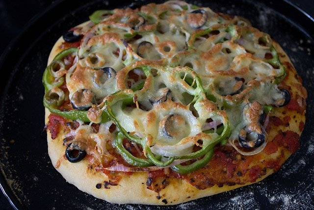
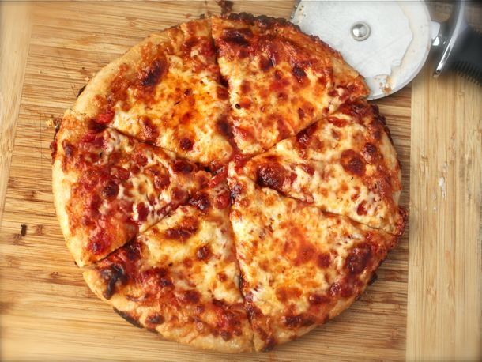

5-Different Receipes for PIZZA

- Making the pizza bread
- Making the pizza sauce
- Assembling the pizza
Let's start with step-1 making the pizza bread:-
- Dissolve the sugar in warm water and add dry active yeast to it.
- stir the whole mixture and keep it aside for 10-15 min.
- when the yeast is getting doubled up,Take a cuo of folur with salt in a bowl.Mix well.Add olive oil.
- After 10-15 min the yeast will bubble and you will see a good frothy layer on top
- Now add the frothy yeast mixture to the flour.With a whisk or wooden spoon stir the mixture.
- Add another cup of flour nd keep on string.
- The mixture will become sticky.
- Add the last cup of flour and continue to stir.
- the dough will leave the sides of the bowl bu still will be a bit sticky.
- It is time now to knead the dough with the hand.Knead the dough to a smooth dough.Dust with flour to prevent sticking
The dough will be soft and elastic .Apply some olive oil to the dough all around.
- keep the dough in a deep large bowl and cover loosely with a kitchen napkin or towel for 1.5 to 2 hours.
- After 2 hours the doughhas beatifully risen and doubled up to what you see below.
- i had planned to make the pizza the next day.so i wrapped the dough tightly in a cling film and kept in the fidge
if you plan to make the pizza right away then flatten the dough to a disk. then start rolling the dough.
- The next morning i removed the pizza dough from the fridge and if you compare the two pics,the dough was getting leavend even in the fridge.
- I kept the cold pizza dough at room temperature for about 45 min. before i started assembling and rolling pizza.
step-2 Making pizza sauce
- Preheat the oven to 200 degree C.Grease the baking pan with olive oil & then dust it with maize flour,semolina
or flour.
- Take a large ball from the dough.I made three medium-sized pizzas from this dough. You can use the whole
dough to make an extra-large pizza or even make two large pizzas.
- place the pizza base in the baking pan.Be careful as the dough has so much elasticity.
Do this work of placing very gently.brush the surface with olive oil.
- Spread the tomato pizza sauce on the pizza
- Top-up with the veggies and olives.
- top with some shredded mozarella cheese or pizza cheese.
- Bake the pizza for 10-15min at 200'C
**THE VEG PIZZA IS READY AND OUT OF THE OVEN**
How To Make Mexican Pizza

Mexican Pizzas are delicious corn tortillas topped with beans,beef and all the delicious taco toppings you can imagine!
They can be cut into wedges and served as an appetizer or left whole and served as amain dish.
Ingredients:-
- 1 can refried beans
- 1 pound ground beef
- 1 package taco seasoning mix
- 1 tablespoon vegetable oil
- 4 corn tortillas
- 8 ounces shredded cheddar cheese
- 2 roma tomatoes,chopped
- 2 green onion,chopped
- 1 can diced green ,drained
- 1/2 avocado ,diced
- 1 tablespoon black olives,sliced
Directions:-
- Heat the refried beans.
- In a large skillet,brown the ground beef.stir in the seasoning packet.
- Preheat oven to 350 degrees F(175 degrees C).
- Place a small amount of vegetable oil in a large skillet. Let the oil heat,then place one corn tortilla in the skillet
After 15 seconds,flip the tortilla over and let it fry another 15 seconds.Repeat this process with the remaining tortilla,letting them drain on paper towels once
they have been heated.When the tortillas have drained,arrang them on a cookie sheet.
- Spread a thin layer of beans o the tortillas,followed by a layer of beef, and cheese.
- Bake the tortillas in the preheated oven for 20 to 30 min.Slice the tortillas into wedges and arrange them on plates or a
serving platter and garnish them with the sour cream,tomatoes,green onions,chiles, avocado,&olives.
**Mexican Pizza is READY**
How To Make Mini Mushroom Pizza
_1592928295203.jpeg)
A delicious snack for parties, these Mini pizza topped with mushrooms,corn and cheese are sure to get everyone's attention and cravings sorted.Easy,quick and light these
smal veg pizzas are one of our best italian pizzas recipes.Just toss the pizza base with Ingredients amd bake for a while, enjoy your delicious Mini mushroom pizzas in no time!!
Ingredients:-
- 2 pizza base
- 1 cup cheese
- 1 cup Mushrooms
- 1 cup Sweet corn kernels
For Pizza Sauce
- 3 cups Tomato puree
- 2 TBSP onions
- 1 TSP onions
- 1 TSP Garlic
- Salt and pepper to taste
Take pizza base on a counter top.Use a cookie cutter to cut small circles and makes dimples in it using a fork.Pop it in the preheated oven and leave for 5 minutes.
In a pan,saute th garlic and onion.Add tomato puree, rosemary,salt.Cook till the sauce is nice amnd thick.A pinch of sugar can be added to sweeten the sauce a bit.
Take toasted pizza bases, pou some sauce.Top it with mushrooms,sweet con kernels and grated cheese.
Bake in the oven for 2 minutes till the cheese melts.
Mini Mushroom Pizza is Ready
How To Make Greek Style Pizza

Ingredients:-
For The Dough-
- 400 grams bread flour
- 4 grams instant yeast
- 8 grams kosher salt
- 2 tablespoons extra virgin olive oil
- 260 grams water & nbsp
For The Sauce-
- 2 tablespoons extra virgin olive oil
- 2 medium cloves garlic, grated on a microplane grater.
- 1 teaspoon dried oregano
- 1/4teaspoonred pepper flakes
- 3 ounces tomato paste
- 1 can crushed tomatoes
- kosher salt
To Assemble-
- 2 tablespoons vegetable shortening , melted.
- 2 tablespoons extra-virgin olive oil
- 8 ounces freshly grated whole milk morzzarella
- 8 ounces freshly grated white cheddar
- 2 ounces parmigiano-Reggiano
Directions:-
- Comine Flour,yeast,and saltn a large bowl and whisk until homogenous.Add oil and water and stir with wooden spoon until cobined.cover with plastic wrap and let at room temperature at
least 8 hr and upto 24.
- The next day,turn dough onto lightly floured surface and dived in half.Form balls with each half,then place into lightly oiled bowls ,coating all surfaces of the balls with oil. Cover with plastic wrap and set aside at room
temperature.
- Meanwhile,make the sauce.Heat olive oil in a medium saucepan over medium-high heat until shimmering.Add garlicoregano,and pepper flakes and cook for thirty seconds until fragrant.Add tomato paste and cook,tirring constantly
for 1 min.Add two thirds of crushed omatoes and stir to combine.Reduce heat to lowst setting and cook,stirring occasionally for 1 hour.
stir in remaining tomao sauce and season totaste with salt.remoe fom heat and set aside.
- Stretch the dough. coat two10-inch cast iron skillet with 1 tbsp each of shortening and olive oil.
Transfer dough balls one at a time to a large cookie sheet and sketch out a 10 inch circle.
Transfer the circle to the greased skillet.Cover and allow to rise for 1 hours at room temperature.Meanwhile ,adjust the oven rack to the bottom position and preheat oven to 500'f.Combine the cheeze in a large bowl and cover until ready to use.
- When dough has risen,top each circle with 1 cup of sauce,spreading it to within half an inch of the edge.Divide grated cheese evenly b/w the two pies,spreading it all the way to the edge of each pie.
- Bake pies until topis buddly and golden brown in spots and cheese has charred around edges,15 to 20 min.Remove pizza from oven and using a thin metal spatula,release the edges from the pans.Carefully lift pies to check for doneness underneath.if you'd like a darker bottom crust,set each pie
directly over a medium-low flam and cook,turning occaasionally until desired level of doneness is reached.
- slide pizza onto cuttingboard,allow to rest two minutes,slice,andserve.
***Greek Pizza Is Ready***
How To Make Kabab & Paneer Pizza
.jpeg)
A mouth atering pizza recipe that is sure to tantalize your taste buds.this fusion of Mughlai seekh kabab and italian pizza recipe is asy and quick with with just a handful of ingredients put to use.A different yet delectable take onion
Italian pizza reciepes which will leave you asking for more.
Ingredients of Kabab and Paneer Pizza
For Tomato Sauce-
- 2TSP oil
- 2Tomatoes
- 3TSP Tomato puree
- 2 cloves Garlic
- A pinch of Oregano
- To taste salt & pepper
For The Toppings-
- 60 gram cheese
- 1 seekh kabab
- 50 gram paneer
- 3 pickled green chillies
- 30 gram onions
- Spinkle of oil
- A pinch of salt
- 1 pizza base
THANK YOU :)